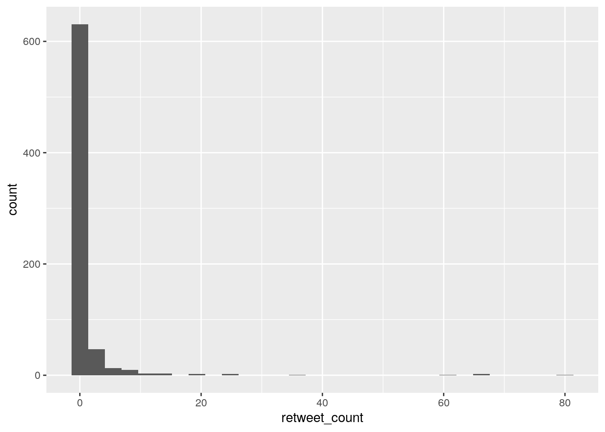
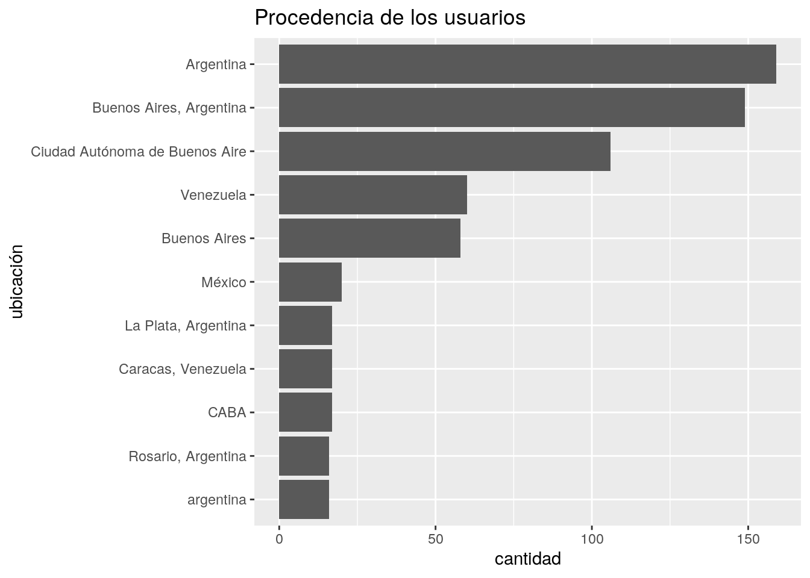
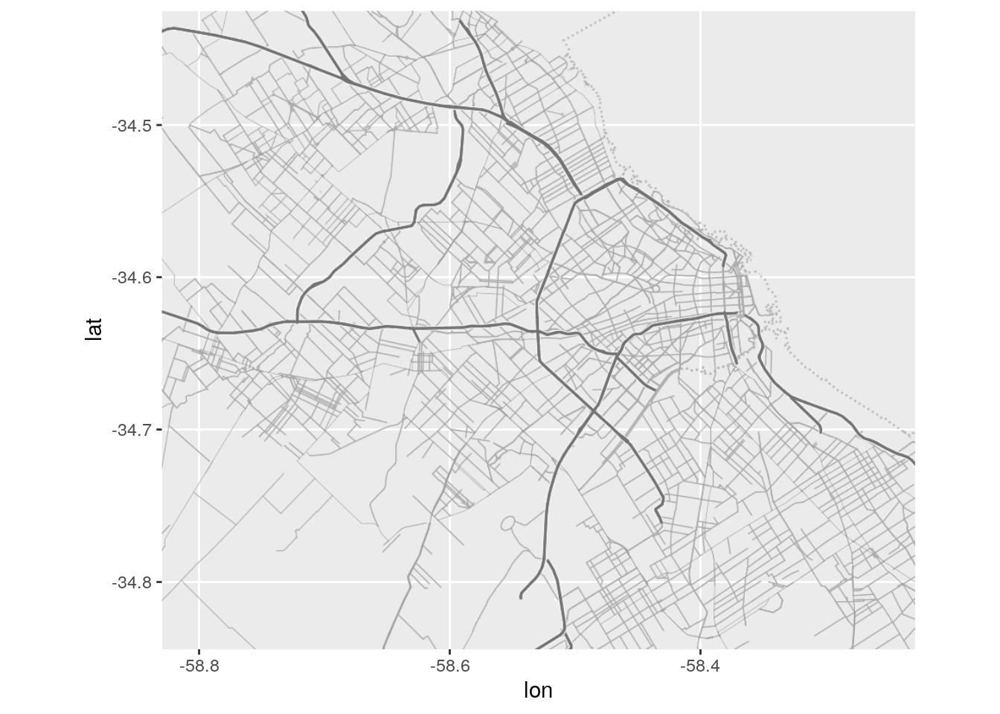

Capítulo 4 Analizando dinámicas espacio-temporales
Para entender datasets con datos en gran volumen que poseen atributos de posición y tiempo, es útil visualizar el ritmo en el que ocurren (diario, mensual, anual, etc) y la forma en la que se disrtibuyen en el espacio.
Para prácticar, trabajaremos con un dataset de delitos registrados en la Ciudad de Buenos Aires. Los datos fueron publicados por el Gobierno de la Ciudad como parte de http://mapa.seguridadciudad.gob.ar/, y recopilados en un repositorio descargable por (???) en https://github.com/ramadis/delitos-caba.
Chequeamos un resumen del contenido del dataset:
## id comuna barrio latitud
## Min. : 1 Length:184879 Length:184879 Min. :-34.71
## 1st Qu.: 46220 Class :character Class :character 1st Qu.:-34.63
## Median : 92440 Mode :character Mode :character Median :-34.61
## Mean : 92440 Mean :-34.59
## 3rd Qu.:138660 3rd Qu.:-34.59
## Max. :184879 Max. : 0.00
## longitud fecha hora uso_arma
## Min. :-58.53 Length:184879 Length:184879 Length:184879
## 1st Qu.:-58.47 Class :character Class :character Class :character
## Median :-58.44 Mode :character Mode :character Mode :character
## Mean :-58.40
## 3rd Qu.:-58.40
## Max. : 0.00
## uso_moto lugar origen_dato tipo_delito
## Length:184879 Length:184879 Mode:logical Length:184879
## Class :character Class :character NA's:184879 Class :character
## Mode :character Mode :character Mode :character
##
##
##
## cantidad_vehiculos cantidad_victimas
## Min. : 0.0000 Min. :0.000000
## 1st Qu.: 0.0000 1st Qu.:0.000000
## Median : 0.0000 Median :0.000000
## Mean : 0.2081 Mean :0.001168
## 3rd Qu.: 0.0000 3rd Qu.:0.000000
## Max. :12.0000 Max. :2.000000Mirando el resumen nos enteramos de que la hora más habitual para un delito son las 8 de la noche, que el delito más frecuente es el hurto sin violencia, y que el lugar más habitual donde ocurren los incidentes es en la vía pública, entre otras cosas.
4.0.1 Trabajando con fechas
La fecha es un tipo de dato que puede ser expresado de muchas maneras, dependiendo de que nos interese teer en cuenta el día de la semana al que corresponde, el mes, el año, etc. El paquete lubridate hace facil extraer de fechas en cualquier formato (por ejemplo “20/07/2018”) el atributo relacionado que deseemos (como “viernes” o “Julio”).
Para empezar, convertimos el campo “fecha” al tipo de dato especializado que se llama… fecha (date). Aquí tenemos que prestar atención al formato en que aparecen, en general algo como “2018-07-21” (mes, día y año) o “2018-07-21 12:14:24” (mes, día, año y hora, minutos, segundos). Con nuestros datos se da el primer caso, por lo cual la función para convertir ese campo en fecha es ymd(); para el segundo caso, seria ymd_hms()
Repasemos algunas de los nuevos trucos que podemos hacer con el tiempo. Tomemos cinco fechas elegidas al azar:
set.seed("99")
muestra_de_fechas <- delitos %>%
mutate(fecha_hora = paste(fecha, hora)) %>%
sample_n(5) %>%
pull(fecha_hora)
muestra_de_fechas## [1] "2016-07-07 20:00:00" "2016-09-07 13:25:00" "2016-04-09 15:00:00"
## [4] "2016-08-12 00:00:00" "2016-01-24 00:00:00"Mediante las funciones diponibles en lubridate, podemos extraer:
- El día de la semana al que corresponde cada fecha:
## [1] 5 4 7 6 1## [1] jue mié sáb vie dom
## Levels: dom < lun < mar < mié < jue < vie < sáb- El mes:
## [1] 7 9 4 8 1## [1] jul sep abr ago ene
## 12 Levels: ene < feb < mar < abr < may < jun < jul < ago < sep < ... < dic- El año:
## [1] 2016 2016 2016 2016 2016Y varias opciones más, que se pueden repasar en https://cran.r-project.org/web/packages/lubridate/vignettes/lubridate.html
Con lo visto hasta aquí, tenemos suficiente para mostrar patrones temporales en los datos.
Delitos registrados por año:

Los resultados no permiten comparar entre años, ya que el dataset tiene apenas un puñado de registros en el 2015, y sólo llega a mediados del 2017. Lección: quedémonos sólo con el 2016 y miremos dentro.
delitos %>%
filter(year(fecha) == 2016) %>%
ggplot() +
geom_bar(aes(x = month(fecha, label = TRUE)))
Se ve bastante parejo! Quizás haya que examinar los delitos por tipo, para ver si hay algunos que muestran altibajos según la estación. Veamos el top 5 de delitos por frecuencia.
## # A tibble: 5 x 2
## tipo_delito n
## <chr> <int>
## 1 Robo (Con violencia) 90393
## 2 Hurto (Sin violencia) 41205
## 3 Lesiones Seg Vial 12791
## 4 Hurto De Rueda 9904
## 5 Hurto Automotor 9144Luce razonable. Guardamos la lista de delitos más frecuentes para referenciar luego.
Y ahora los comparamos. En gráfico de barras “apilado”:
delitos %>%
filter(year(fecha) == 2016,
tipo_delito %in% delitos_frecuentes) %>%
ggplot() +
geom_bar(aes(x = month(fecha, label = TRUE), fill = tipo_delito))
… y sin apilar
delitos %>%
filter(year(fecha) == 2016,
tipo_delito %in% delitos_frecuentes) %>%
ggplot() +
geom_bar(aes(x = month(fecha, label = TRUE), fill = tipo_delito),
position = "dodge")
O como líneas:
# Primero realizamos un conteo de delitos por tipo y por mes del año
conteo <- delitos %>%
filter(year(fecha) == 2016,
tipo_delito %in% delitos_frecuentes) %>%
count(tipo_delito, mes = month(fecha, label = TRUE))
# Y ahora a mostras las cantidades mensuales como líneas
ggplot(conteo) +
geom_line(aes(x = mes, y = n, group = tipo_delito, color = tipo_delito))
Ésta última opción es sin dudas la más clara, tanto para mostrar la diferencia relativa en el volumen de incidentes, como para indicar si existen fluctuaciones.
Intentémoslo otra vez, ahora con el día de la semana:
# Primero realizamos un conteo de delitos por tipo y por día de la semana
conteo <- delitos %>%
filter(year(fecha) == 2016,
tipo_delito %in% delitos_frecuentes) %>%
count(tipo_delito, diasemana = wday(fecha, label = TRUE))
# Y ahora a mostras las cantidades mensuales como líneas
ggplot(conteo) +
geom_line(aes(x = diasemana, y = n, group = tipo_delito, color = tipo_delito))Como algunas categorías están mucho menos representadas, y quedan “aplastadas” en el gráfico con lo que se dificulta su legibilidad. Vamos a comparar porcentajes en lugar de valores absolutos.
conteo <- conteo %>%
group_by(tipo_delito) %>%
mutate(pct = n / sum(n) * 100)
ggplot(conteo) +
geom_line(aes(x = diasemana, y = pct, group = tipo_delito, color = tipo_delito))La diferencia de volumen según el día parece drástica, pero es engañosa: el eje de las \(y\) no empieza en 0, lo cual hace que las diferencias se perciban mayores de lo que son. Forzamos al gráfico a comenzar desde 0 el eje \(y\):
ggplot(conteo) +
geom_line(aes(x = diasemana, y = pct, group = tipo_delito, color = tipo_delito))+
expand_limits(y = 0)
Sin dudas, los domingos son el día en que el delito descansa un poco… excepto pra quienes deciden llevarse un auto o al menos una rueda ajena. El pico de delitos reportados ocurre los viernes, con la excepción del hurto de rueda, que crece de domingo a miércoles y luego decae.
Recordando que los homicidios suelen tener un contexto muy distinto al de los robos, agreguemos la categoría “Homicidio Doloso” para comparar con las demás.
conteo_homicidios <- delitos %>%
filter(year(fecha) == 2016,
tipo_delito == "Homicidio Doloso") %>%
count(tipo_delito, diasemana = wday(fecha, label = TRUE)) %>%
group_by(tipo_delito) %>%
mutate(pct = n / sum(n) *100)Sumamos la nueva categoría:
ggplot(conteo) +
geom_line(aes(x = diasemana, y = pct, group = tipo_delito, color = tipo_delito)) +
geom_line(data = conteo_homicidios,
aes(x = diasemana, y = pct, group = tipo_delito)) +
labs(title = "Distribución diaria por tipo de delito",
subtitle = "La línea negra representa homicidios",
x = "día", y = "%",
color = "Delitos más frecuentes") +
expand_limits(y = 0)
La categoría homicidio muestra un ritmo inverso al de los otros delitos: es más frecuente durante el fin de semana, decayendo en los días hábiles.
También podemos evaluar el ritmo según la hora del día. Para ello necesitamos pasar a formato temporal la columna “hora”, que en éste dataset tiene el formato “hh:mm:ss” (por ejemplo, “14:55:00”). La función correspondiente para interpretar ese formato es hms(). Usamos una combinacion de hms() para interpretar el texto en “hora” como una variable de tipo tiempo, y hour() para extraer la hora base -por ejemplo, para “19:55:00” la hora base es 19.
por_hora <- delitos %>%
filter(year(fecha) == 2016,
tipo_delito %in% delitos_frecuentes) %>%
count(tipo_delito, hora_base = hour(hms(hora))) %>%
group_by(tipo_delito) %>%
mutate(pct = n / sum(n) *100)ggplot(por_hora) +
geom_line(aes(x = hora_base, y = pct, group = tipo_delito, color = tipo_delito)) +
labs(title = "Distribución horaria por tipo de delito",
x = "hora", y = "%",
color = "Delitos más frecuentes") +
expand_limits(y = 0) +
scale_x_continuous(breaks = 0:23)
Para los delitos relacionados con automóviles, el “prime time” es como el de la TV, de 20 a 22. Los robos violentos tienen su apogeo durante las 20. Las lesiones viales comparten su hora pico con el tráfico. Los hurtos tienen su momento cúlmine a la hora del almuerzo, y a la de salida de la oficina.
4.1 Mirando al espacio
Pasemos a hora al análisis espacial de nuestros datos. Para facilitar la visualización vamos a usar el paquete ggmap, que incluye varias funciones que facilitan la creación de mapas.
4.1.1 Obteniendo un mapa base
Para obtener un mapa de fondo, obtenemos el “bounding box” de nuestros datos, y luego se los pasamos a get_stamenmap(). Para más detalles sobre la descarga de mapas base, ver http://rpubs.com/HAVB/mapeo_tweets.
delitos <- delitos %>%
filter(latitud <0, longitud <0)
bbox <- c(min(delitos$longitud, na.rm = TRUE),
min(delitos$latitud, na.rm = TRUE),
max(delitos$longitud, na.rm = TRUE),
max(delitos$latitud, na.rm = TRUE))
CABA <- get_stamenmap(bbox = bbox,
maptype = "toner-lite")Para verlo:

4.1.2 De coordenadas al mapa
De aquí en más podemos suporponer nuestros datos en distintas capas, con la misma sintaxis que conocemos de ggplot. Para mapear las ubicaciones de los delitos en el dataset, usamos geom_point() y los campos de longitud y latitud para los ejes \(x\) e \(y\):
Aquí nos topamos con un problema, habitual al trabajar con grandes volúmenes de datos. Hay tantos puntos proyectados sobre el mapa, que se hace imposible interepretar donde existen más o menos. Hacemos algunso ajustes: un color más llamativo, un tamaño de punto más pequeño, y aplicación de una ligera transparencia, vía los atributos “color”, “size” y “alpha”. ¿Cuál es el valor ideal para cada uno? En general, no queda otra que recurrir a la prueba y error para encontrar la receta justa.
ggmap(CABA) +
geom_point(data = delitos, aes(x = longitud, y = latitud),
color = "orange", size = 0.1, alpha = 0.1)Ahora si aparecen ciertos patrones, por ejemplo la afinidad del delito con las grandes vías de circulación de la ciudad. Aún así, se hace dificil identificar de un golpe de vsta las “zonas calientes”, los puntos de máxima concentración.
4.1.3 Mapas de densidad
Una solución práctica para el problema de la cantidad de puntos es una técnica llamada “binning”: dividir el espacio en una grilla de celdas, contar cuantos puntos caen dentro de cada una, y visualizar las cantidades agregadas. Hacerlo es muy fácil vía geom_bind2d().

Ahora si, resaltan las áreas de mayor concentración de incidentes. Se puede mejorar un poco el gráfico usando una mayot cantidad de celdas para aumentar la resolución. También empleando una escala de colores diseñada para ayudar a detectar diferencias por tonalidad, como viridis.
ggmap(CABA) +
geom_bin2d(data = delitos, aes(x = longitud, y = latitud), bins = 100) +
scale_fill_viridis_c()Una alternativa al binning es la llamada kernel density estimation, muy utilizada en aplicaciones GIS para estimar la intensidad de una determinada variable en cualquier punto del área analizada, incluso en aquellos donde no hay observaciones. La idea es asumir que los valores observados corresponden a una distribución continua sobre el espacio, y determinar cual es la más probable en base a los puntos con datos. No hace falta realizar ningún cálculo matemático, sólo usar geom_density2d así:
4.1.4 Visualizando multiples categorías
Hasta aquí hemos analizado la distribución espacil del delito en su totalidad, sin diferenciar su tipo. Veamos ahora las difrencias por categoría. Podemos reintentar el mapa de puntos, esta vez filtrando los tipos de delito para incluir sólo los más frecuentes, y diferenciándolos por color.
ggmap(CABA) +
geom_point(data = filter(delitos, tipo_delito %in% delitos_frecuentes),
aes(x = longitud, y = latitud, color = tipo_delito),
size = 0.1, alpha = 0.1)
Aquí tenemos dos problemas:
La leyenda (“tipo_delito”) es difícil de leer, dado que muestra los puntos tal como los definimos: pequeños y con mucha transparencia. Esos atributos son útiles en el mapa, donde tenemos cientos de miles de puntos, pero muy poco prácticos para la leyenda, donde sólo hay uno por etiqueta.
Los puntos sobre el mapa se superponen en tal medida que es dificil discenir patrones espaciales distintos según su categoría.
El primer problema se resuelve fijando “a mano” los atributos de la lyenda, asi:
ggmap(CABA) +
geom_point(data = filter(delitos, tipo_delito %in% delitos_frecuentes),
aes(x = longitud, y = latitud, color = tipo_delito),
size = 0.1, alpha = 0.1) +
guides(color = guide_legend(override.aes = list(size=2, alpha = 1))) +
scale_color_brewer(palette = "Set1")
El segundo, usando facetado para mostrar en su propio mapa a cada categoría:
ggmap(CABA) +
geom_point(data = filter(delitos, tipo_delito %in% delitos_frecuentes),
aes(x = longitud, y = latitud, color = tipo_delito),
size = 0.1, alpha = 0.1) +
scale_color_brewer(palette = "Set1") +
facet_wrap(~tipo_delito)El facetado ayuda. Se hacie evidente, por ejemplo, que el patrón espacial de las lesiones en seguridad vial es muy distinto al de hurto automotor.
Para hacer las diferencias aún mas nítidas, podemos facetar una estimación de densidad:
4.1.5 Combinando espacio y tiempo
El facetado también nos permite visualizar el cambio de posición a través del tiempo.
Por ejemplo, podemos comparar dos tipos de delito (hurto sin violencia y hurto de rueda) mostrando dónde ocuren en cada día de la semana.
delitos <- delitos %>%
mutate(dia_semana = wday(fecha, label = TRUE))
ggmap(CABA) +
geom_point(data = filter(delitos,
tipo_delito %in% c("Hurto (Sin violencia)", "Hurto De Rueda")),
aes(x = longitud, y = latitud, color = tipo_delito), alpha = .5, size = .2) +
facet_wrap(~dia_semana)O concentrarnos en un tipo de delito en particular, y evaluar en que zonas se concentra de acuerdo a la hora del día:
delitos <- delitos %>%
mutate(hora_base = hour(hms(hora)))
ggmap(CABA) +
geom_density2d(data = filter(delitos,
tipo_delito == "Hurto (Sin violencia)",
!(wday(fecha) %in% 2:5) ),
aes(x = longitud,
y = latitud,
color = stat(level))) +
scale_color_viridis_c() +
facet_wrap(~hora_base, nrow = 4) +
labs(title = "Concentración espacial de hurtos",
subtitle = "según hora del día")